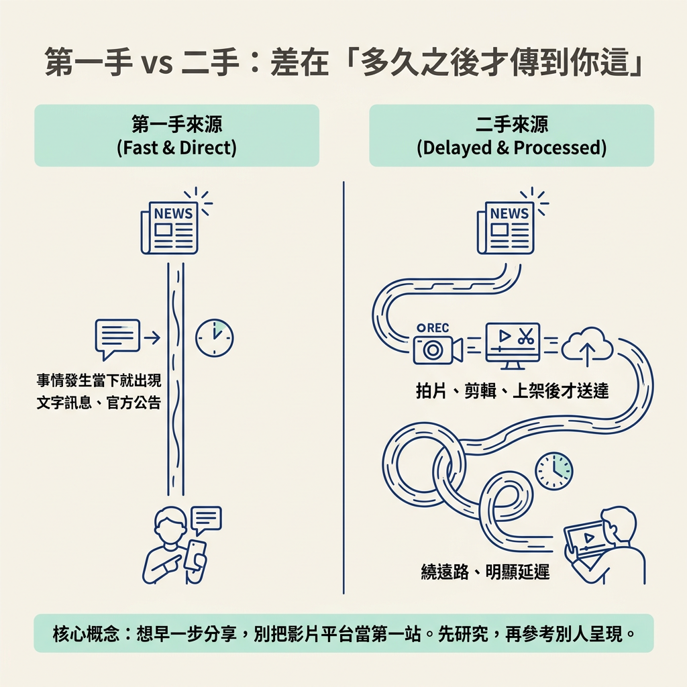
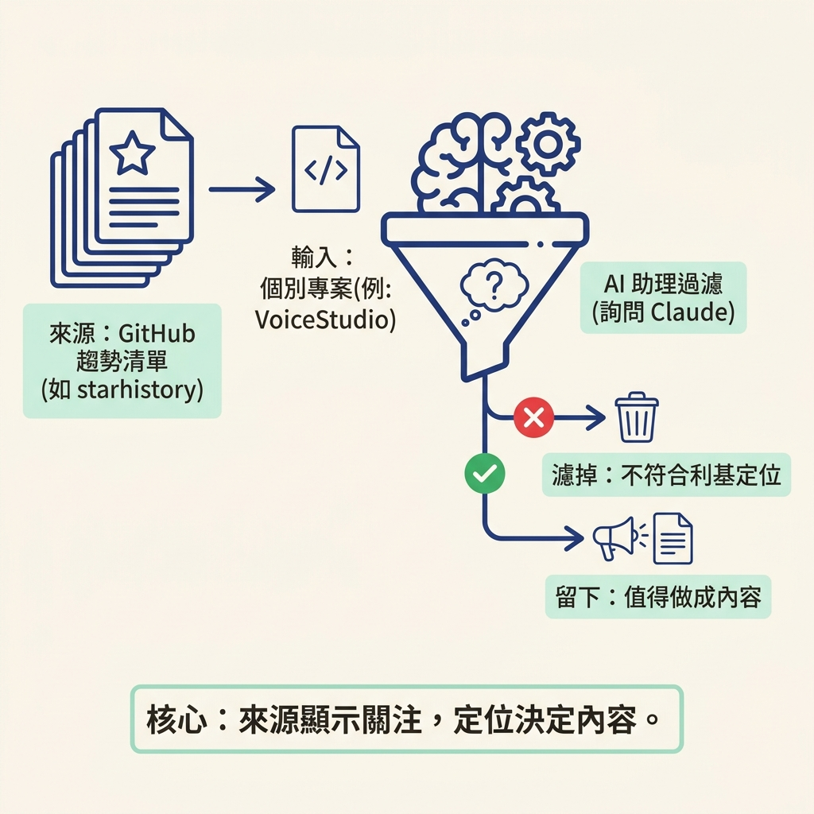
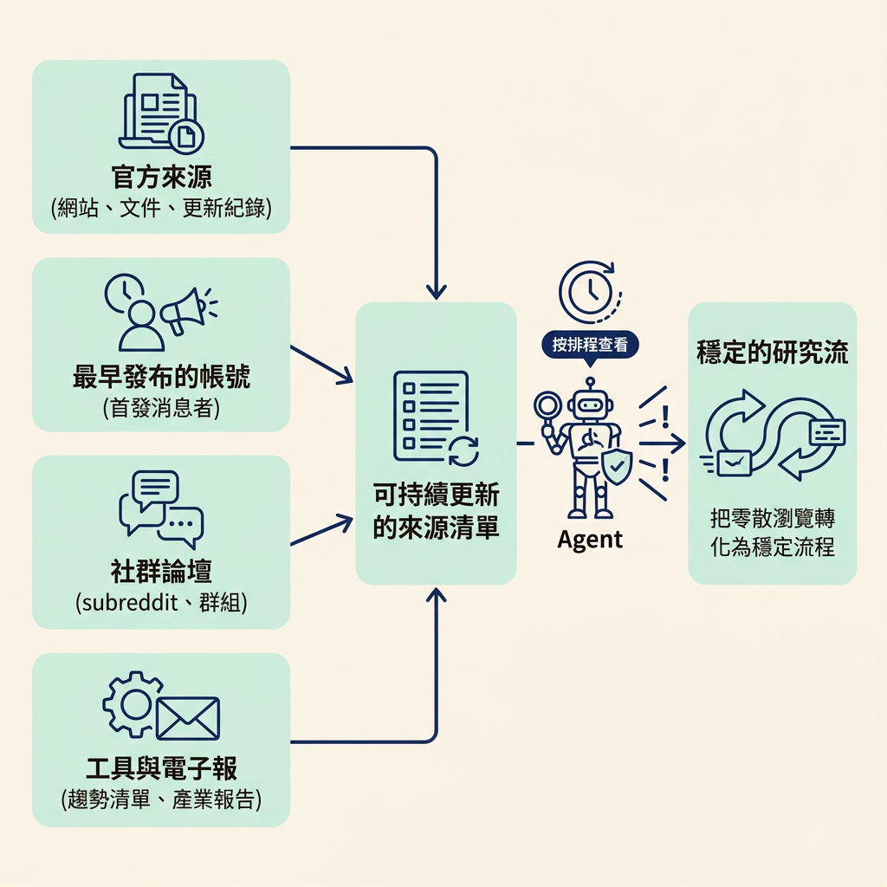

這一步接在上一節找到利基的「井」之後：你已經知道要去哪裡找消息，現在要分辨哪些來源最早出現新資訊，並把它們整理成持續的研究流。這裡會用到你的利基、平常瀏覽的內容，以及能主動發出提醒的 agent；最後，你會得到一份來源清單和一套警示設定方式，讓點子不必全靠臨時搜尋。
上一節你找到了自己利基的井，也就是最新消息最先出現的地方。現在問題來了：井裡的水，流到你面前的速度並不一樣。有人在事情發生時立刻用文字分享；也有人把它拍成影片，過幾天才上片。如果你只看到後者，就可能慢半拍。
這一節先把「第一手」和「二手」分清楚，讓你知道該優先看哪裡；接著，把原本只是滑手機的時間，變成點子研究。做法很簡單：把有用的內容存進書籤，再讓 agent 主動提醒你關注的消息。
講師用很直接的方式說明這個差別。如果你對某個產業有興趣，卻只從 TikTok、Instagram 或 YouTube 接收消息，他會把這些稱為二手知識來源（second-order knowledge sources）。原因在於製作成本：拍片、面對鏡頭、剪輯和上架，都比發一則文字貼文花時間，所以消息傳到這些平台時，通常已經延遲了一段時間。
相對地，X、官方文件，或依產業而定的 GitHub，可能讓你直接接觸消息源頭，少等一段時間。下面把兩種來源放在一起比較：
| 比較項目 | 第一手（X、GitHub、官方文件） | 二手（TikTok／IG／YouTube） |
|---|---|---|
| 出現速度 | 事情一發生就可能出現 | 要等拍完、上片才有 |
| 傳遞形式 | 多為文字或原始檔案 | 多為已剪輯的影片 |
| 延遲來源 | 幾乎沒有 | 製作與上架的時間 |
| 你的收穫 | 更早、更接近原貌 | 較晚、已被重新包裝 |
影片平台不是沒用，但如果你想比別人早一步分享，就別把影片平台當成第一站。等研究完消息，再去影片平台看看別人怎麼呈現，會更適合。

第一手來源可以是什麼？講師以自己做 AI 內容為例，說 X 是很好的來源。理由很直接：X 上的內容以文字貼文為主，發布新消息不必像拍片一樣經過許多準備，因此消息可能更早在這裡出現。
他也分享自己的使用經驗：剛開始當內容消費者時，他其實不常用 X；後來發現，逛的時候把有用的內容加進書籤，這個小動作本身就能累積資訊來源。大約用一天後，X 也會逐漸依照你的偏好調整內容。他提到，Anthropic、OpenAI、Cloud Devs 等帳號，以及 Anthropic 團隊成員、Cloud Code 創作者 Boris Cherny，都會在 X 上分享消息。
這裡最重要的動作，是把消費變成研究。看到吸引你注意的內容，就順手加入書籤。需要點子時，你可以翻自己的書籤，也可以請 Claude 幫你讀過書籤，再提出幾個內容點子。原本看過就滑走的資訊，就能慢慢累積成隨時可用的素材庫。
第二個來源是 GitHub。講師把它比喻成工程師的 Google Drive，因為許多程式碼、外掛和軟體都會以開源方式發布在這裡。他自己大約每兩週會查看 starhistory.com，這個網站會整理出最多人討論、最多人按星的 GitHub 專案趨勢清單。
清單上出現新專案時，他不會自己硬讀，而是把專案交給 Claude，問它「這是不是真的、值不值得講」。他舉了清單上的 VoiceStudio 為例：它是一套開源、可完全在本地端執行的 ElevenLabs 替代品。這個專案看起來有人氣，但未必適合他，因為他的內容並不聚焦在「開源本地端替代方案」。這個判斷很重要：來源能告訴你什麼技術正受關注，但要不要做成內容，還得看你想分享什麼。

第三種來源是官方文件。講師特別提到 Claude 和 OpenAI 的官方文件，認為它們都是很好的知識來源。他舉例，自己曾製作一支影片，談「Anthropic 剛公布了 12 條給 Opus 5.5 的提示規則」；當時 Opus 5.5 才剛發布。他知道 Claude 平台的官方文件會提供如何提示新模型的材料，於是把文件交給 Claude，一起擬定影片段落與重點。那支影片後來有大約四十萬次觀看。講師認為，影片表現好是因為內容非常即時，站在產業知識的前沿；而且官方資料對許多人來說既實用，品質也高。
知道要看哪些來源後，下一個問題是：怎麼不用整天盯著它們？講師建議，如果你已經在用 agent（也就是能代你執行任務、提供資訊或發出提醒的工具），可以交給它一段 prompt，設定成只要你的利基有新消息就通知你。他提到的工具包括 Grokbot、Hermes、OpenClaw，也可以是新版 ChatGPT 這類能主動發出警示的工具。
講師自己有一個 Grokbot 帳號，一開始只設定 Claude 相關提醒，後來也加入 GPT-6／OpenAI 和 Google 的消息，一天大約收到二到三次提醒。他特別提醒，你不必一天收到三次；這只是因為 AI 領域變化快，他才選擇這個頻率。警示多久一次，應該由你的產業變化速度和需求決定。
講師提供兩段可以直接複製的 prompt。第一段用來設定新聞警示，內容如下：
"""Set up a news alert for me about [my niche, for example AI agents]. 1. First, list the sources where news in this niche shows up first: official company blogs, docs and changelogs, the main companies' and people's accounts on X, GitHub, and the subreddits or forums where it gets discussed. Show me the list and let me add or remove sources before you start. 2. Check those sources [twice a day, at 8am and 5pm my time] and send me an alert each time. 3. Each alert has the 3 to 5 most important new things since the last alert. For each one: what happened in one line, why it matters to someone making content in my niche, and the source link. Skip anything you already sent me. 4. End each alert with one content idea I could post today from it. 5. If nothing important happened, send one line saying so instead of padding it. Ask me any questions you need before you set it up, then confirm the schedule back to me."""
這段 prompt 先請 agent 列出利基相關來源，讓你確認後再增刪；接著指定檢查頻率，並要求每則警示簡短說明發生了什麼、為什麼值得關注，以及附上來源連結。它還要求 agent 提出一個你今天就能發布的點子，並跳過已經提醒過的內容。這樣收到的通知就不只是消息，也能直接成為內容工作的起點。
如果你還不確定自己的來源在哪裡，可以用第二段 prompt 來研究：
"""I make content about [my niche] for [who I make it for]. Help me find my well of knowledge: the places where news and new ideas in this niche show up first, before they reach TikTok, Instagram and YouTube. 1. Ask me 2 or 3 questions about my niche and audience first if you need to. 2. Research and list the best sources in four groups: official sources (company sites, docs, changelogs), the people and accounts who post first (on X or wherever my niche talks), communities (subreddits, forums, groups), and tools or data (for example trending lists, launch sites, industry newsletters). 3. For each source give me the link, why it is early, and how often it posts. 4. Mark the 5 I should check every week, and tell me which ones you could check for me on a schedule."""
這段 prompt 把來源分成四類：官方來源（公司網站、文件、更新紀錄）、最早發布消息的人與帳號、社群（subreddit、論壇、群組），以及工具或資料（趨勢清單、發布網站、產業電子報）。最後，它會標出每週值得查看的五個來源，並告訴你哪些可以交給 agent 定期追蹤。完成後，你就有一份能持續使用的來源清單。

第一手來源（X、GitHub、官方文件）離消息源頭較近，通常也不必等影片製作完成；TikTok／IG／YouTube 則可能因拍攝與上架時間而延遲。要把日常瀏覽變成研究流，可以在 X 上收藏有用的內容，必要時請 Claude 閱讀書籤；也可以用 prompt 讓 agent 定期追蹤來源。警示頻率不必照搬講師的設定，依你的產業變化速度調整即可。
這一節把 Well of Knowledge 從一個比喻變成可追蹤的來源清單，也補上了主動提醒的方式。下一步會把這些來源接到本模組的主角 `/latest`，整理最近七天的熱點，產出一批附有連結的候選點子。